BézierFlow: Learning Bézier Stochastic Interpolant Schedulers for Few-Step Generation (ICLR 2026)
BézierFlow: Learning Bézier Stochastic Interpolant Schedulers for Few-Step Generation (ICLR 2026)
A lightweight training framework parameterizing stochastic interpolant schedulers via Bézier functions to optimize sampling trajectories for efficient few-step generation.
 PairFlow: Closed-Form Source-Target Coupling for Few-Step Generation in Discrete Flow Models (ICLR 2026)
PairFlow: Closed-Form Source-Target Coupling for Few-Step Generation in Discrete Flow Models (ICLR 2026)
A lightweight preprocessing step for training Discrete Flow Models (DFMs) to achieve few-step sampling without requiring a pretrained teacher.
 Inference-Time Scaling for Flow Models via Stochastic Generation and Rollover Budget Forcing (NeurIPS 2025)
Inference-Time Scaling for Flow Models via Stochastic Generation and Rollover Budget Forcing (NeurIPS 2025)
An inference-time scaling method for flow models introducing stochastic sampling, interpolant conversion, and adaptive search algorithm to improve reward alignment.
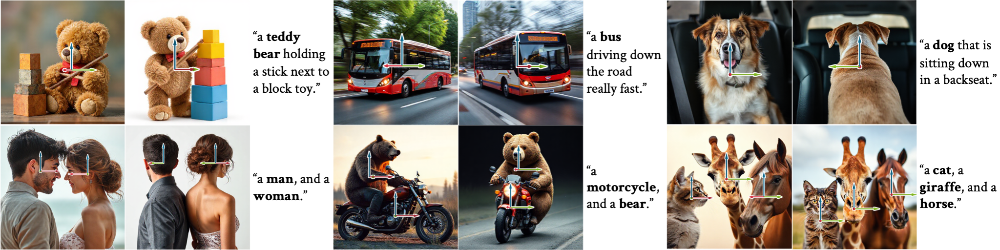
ORIGEN: Zero-Shot 3D Orientation Grounding in Text-to-Image Generation (NeurIPS 2025)
The first zero-shot method for 3D orientation grounding in text-to-image generation across multiple objects and diverse categories.
 Ψ-Sampler: Initial Particle Sampling for SMC-Based Inference-Time Reward Alignment in Score Models (NeurIPS 2025)
Ψ-Sampler: Initial Particle Sampling for SMC-Based Inference-Time Reward Alignment in Score Models (NeurIPS 2025)
A framework for score-based generative models enabling efficient inference-time reward alignment via initial particle sampling.
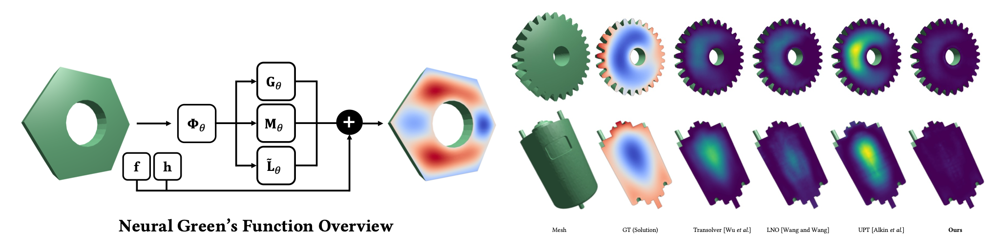
Neural Green’s Functions (NeurIPS 2025)
A neural operator designed for linear PDEs, providing strong generalization across diverse source terms, boundary conditions, and geometries.
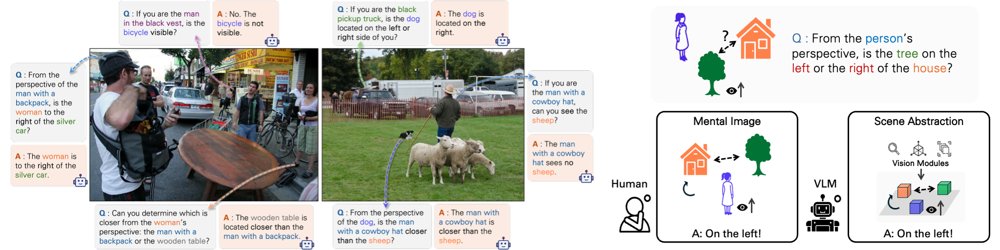
Perspective-Aware Reasoning in Vision-Language Models via Mental Imagery Simulation (ICCV 2025)
A framework for vision-language models to perform spatial reasoning in arbitrary perspectives.
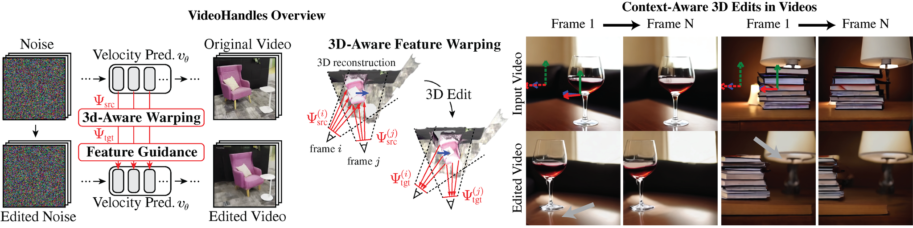
VideoHandles: Editing 3D Object Compositions in Videos Using Video Generative Priors (CVPR 2025)
The first method for 3D object composition editing in videos without any training.
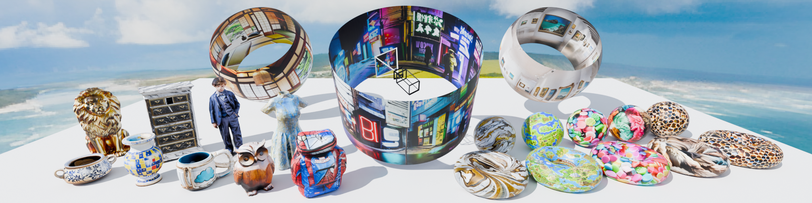
StochSync: Stochastic Diffusion Synchronization for Image Generation in Arbitrary Spaces (ICLR 2025)
A method that combines diffusion synchronization and score distillation sampling for generating images in arbitrary spaces (e.g., 360° panoramas and mesh textures).
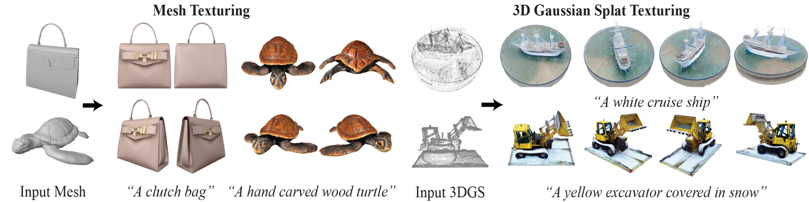
SyncTweedies: A General Generative Framework Based on Synchronized Diffusions (NeurIPS 2024)
A novel approach for synchronizing multiple reverse diffusion processes to generate diverse visual content.
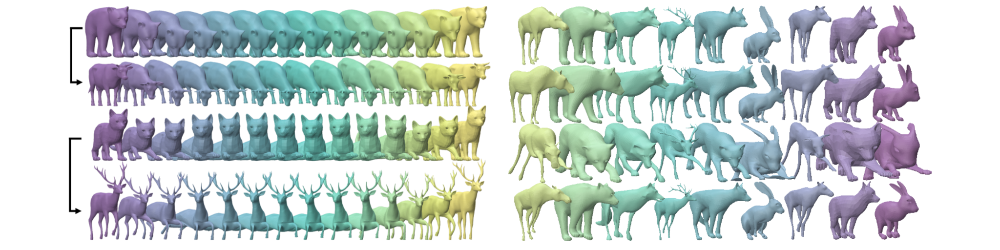
Neural Pose Representation Learning for Generating and Transferring Non-Rigid Object Poses (NeurIPS 2024)
A framework for learning neural pose representations that facilitate the generation and transfer of non-rigid object poses.
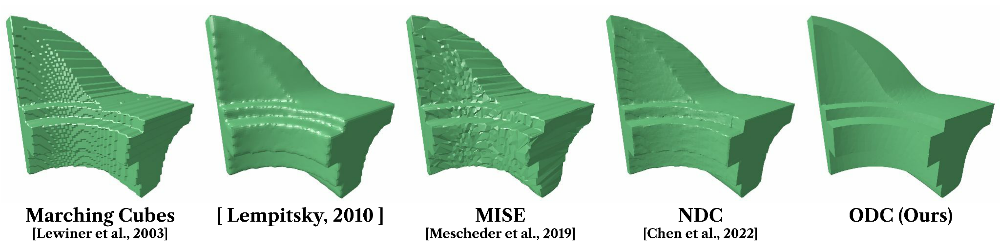
Occupancy-Based Dual Contouring (SIGGRAPH Asia 2024)
A dual contouring method that provides state-of-the-art performance for various neural implicit functions.
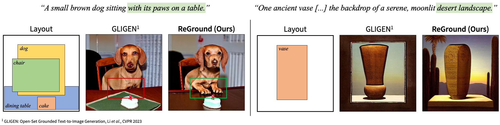
ReGround: Improving Textual and Spatial Grounding at No Cost (ECCV 2024)
A cost-free network reconfiguration for improving the text-prompt fidelity in layout-guided image generation.
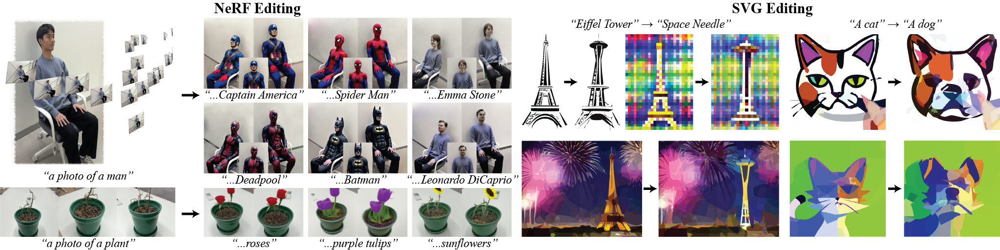
Posterior Distillation Sampling (CVPR 2024)
A novel optimization method for editing parameterized images, applicable to NeRF, 3D Gaussian Splatting, and SVG.
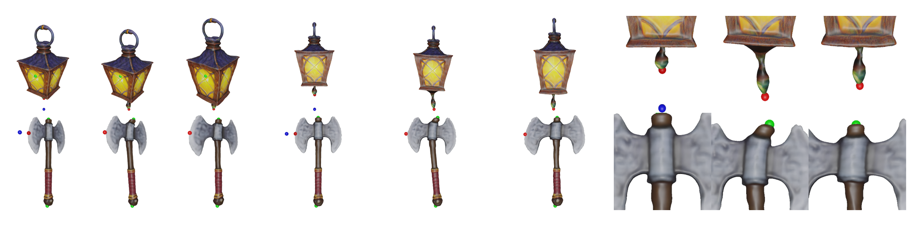
As-Plausible-As-Possible: Plausibility-Aware Mesh Deformation Using 2D Diffusion Priors (CVPR 2024)
A plausibility-aware mesh deformation framework integrating Jacobian-based geometry representation and generative image priors.
SyncDiffusion: Coherent Montage via Synchronized Joint Diffusions (NeurIPS 2023)
A zero-shot plug-and-play module that synchronizes multiple reverse diffusion processes, producing coherent images of various sizes.
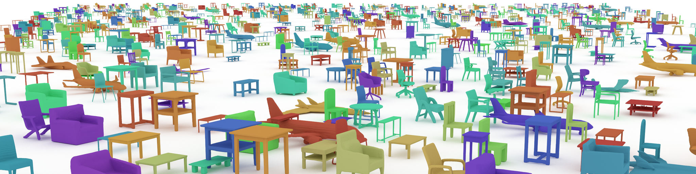
SALAD: Part-Level Latent Diffusion for 3D Shape Generation and Manipulation (ICCV 2023)
A cascaded diffusion model based on a part-level implicit 3D representation.
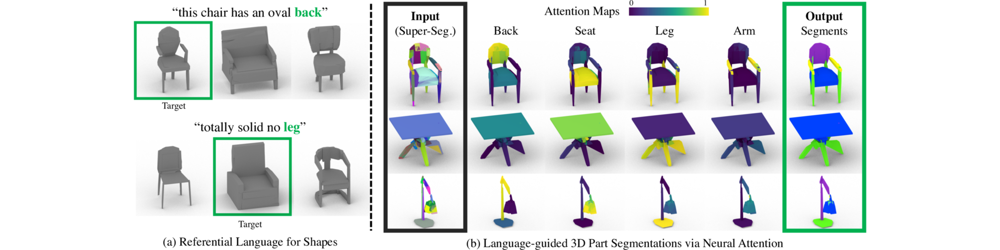
PartGlot: Learning Shape Part Segmentation from Language Reference Games (CVPR 2022 (Oral))
A neural framework for learning semantic part segmentation of 3D shape geometry based solely on part referential language.
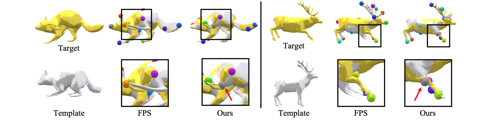
OptCtrlPoints: Finding the Optimal Control Points for Biharmonic 3D Shape Deformation (Pacific Graphics 2023)
A data-driven framework identifying the optimal sparse set of control points for biharmonic 3D shape deformation.